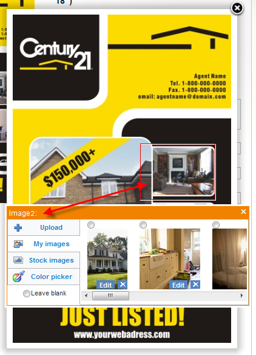

<?xml version="1.0" encoding="UTF-8"?><rss version="2.0"
	xmlns:content="http://purl.org/rss/1.0/modules/content/"
	xmlns:wfw="http://wellformedweb.org/CommentAPI/"
	xmlns:dc="http://purl.org/dc/elements/1.1/"
	xmlns:atom="http://www.w3.org/2005/Atom"
	xmlns:sy="http://purl.org/rss/1.0/modules/syndication/"
	xmlns:slash="http://purl.org/rss/1.0/modules/slash/"
	>

<channel>
	<title>change &#8211; On web to print sofware, solutions and hosted services</title>
	<atom:link href="http://www.zetaprints.com/blog/tag/change/feed/" rel="self" type="application/rss+xml" />
	<link>http://www.zetaprints.com/blog</link>
	<description>From web to print and everything in between</description>
	<lastBuildDate>Fri, 02 Aug 2013 10:44:32 +0000</lastBuildDate>
	<language>en-US</language>
	<sy:updatePeriod>hourly</sy:updatePeriod>
	<sy:updateFrequency>1</sy:updateFrequency>
	<generator>https://wordpress.org/?v=4.4.1</generator>
	<item>
		<title>Interactive web-to-print personalization changes</title>
		<link>http://www.zetaprints.com/blog/2010/06/12/interactive-web-to-print-personalization-changes/</link>
		<comments>http://www.zetaprints.com/blog/2010/06/12/interactive-web-to-print-personalization-changes/#respond</comments>
		<pubDate>Sat, 12 Jun 2010 11:12:13 +0000</pubDate>
		<dc:creator><![CDATA[admin]]></dc:creator>
				<category><![CDATA[API]]></category>
		<category><![CDATA[web-to-print software]]></category>
		<category><![CDATA[change]]></category>
		<category><![CDATA[image editing]]></category>

		<guid isPermaLink="false">http://www.zetaprints.com/blog/?p=573</guid>
		<description><![CDATA[We introduced interactive design personalization features in our latest stable release of Magento web-to-print extension. More changes coming this weekend. The way dynamic imaging shape coordinates were set up turned out to be a dead end approach and quite inconsistent. We had to change the coordinates from bottom-left corner to top-left corner, as it is [&#8230;]]]></description>
				<content:encoded><![CDATA[<p>We introduced <a title="interactive imaging" href="../../../../magento-web-to-print/magento-interactive-personalization/">interactive design personalization features</a> in our <a title="Magento web-to-print" href="../../../2010/06/08/web-to-print-extension-for-magento-update/">latest stable release</a> of Magento web-to-print extension. More changes coming this weekend.</p>
<p>The way dynamic imaging shape coordinates were set up turned out to be a dead end approach and quite inconsistent. We had to change the coordinates from bottom-left corner to top-left corner, as it is in browsers and most image rendering. The units used for the coordinates are also changing.</p>
<p>This change should affect only those few customers who implemented their own interactive editing scripts. If you are the one and we have not contacted you, please, get in touch ASAP.</p>
<h2>Magento implementation changes</h2>
<p>Existing templates will continue to function with the current Magento release.</p>
<p>New templates processed after the change will require a new beta release, which will be published on the same day as the API change.</p>
<h2>Still experimental</h2>
<p>Interactive personalization will be an experimental web-to-print feature for about a month more until we finish implementation of advanced text/image editing, such as font size change, image resizing, cropping, shifting, all in context of a web-to-print template preview.</p>
<div style="width: 287px" class="wp-caption alignnone"><p class="wp-caption-text">interactive web-to-print</p></div>
<div style="width: 432px" class="wp-caption alignright"><p class="wp-caption-text">in-preview dynamic imaging</p></div>
]]></content:encoded>
			<wfw:commentRss>http://www.zetaprints.com/blog/2010/06/12/interactive-web-to-print-personalization-changes/feed/</wfw:commentRss>
		<slash:comments>0</slash:comments>
		</item>
	</channel>
</rss>

<!-- Localized -->